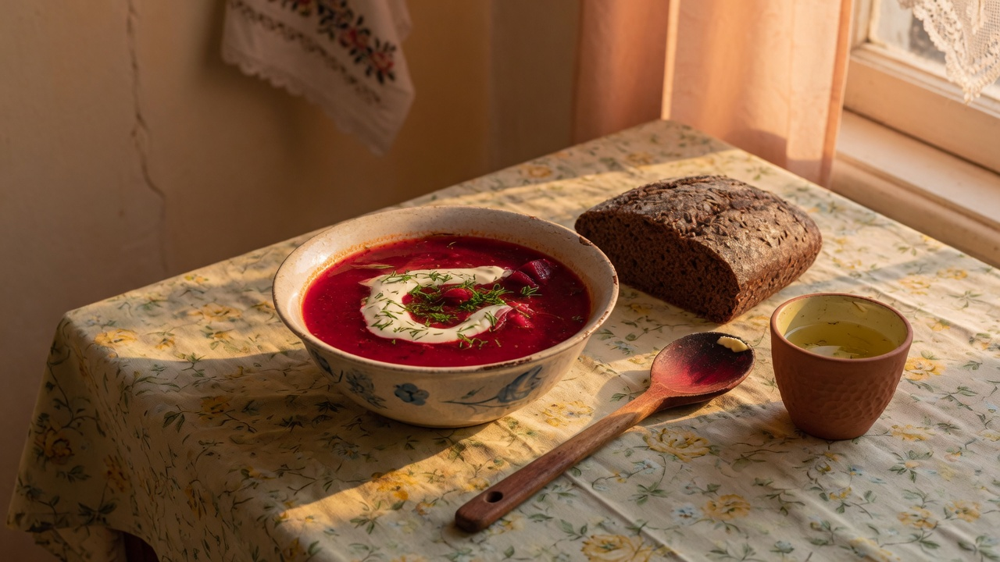
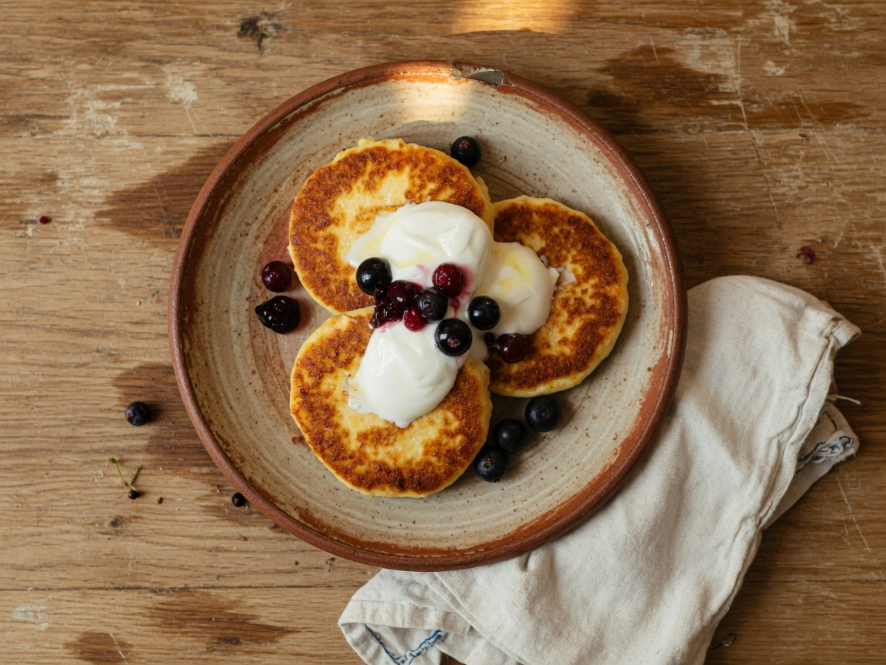
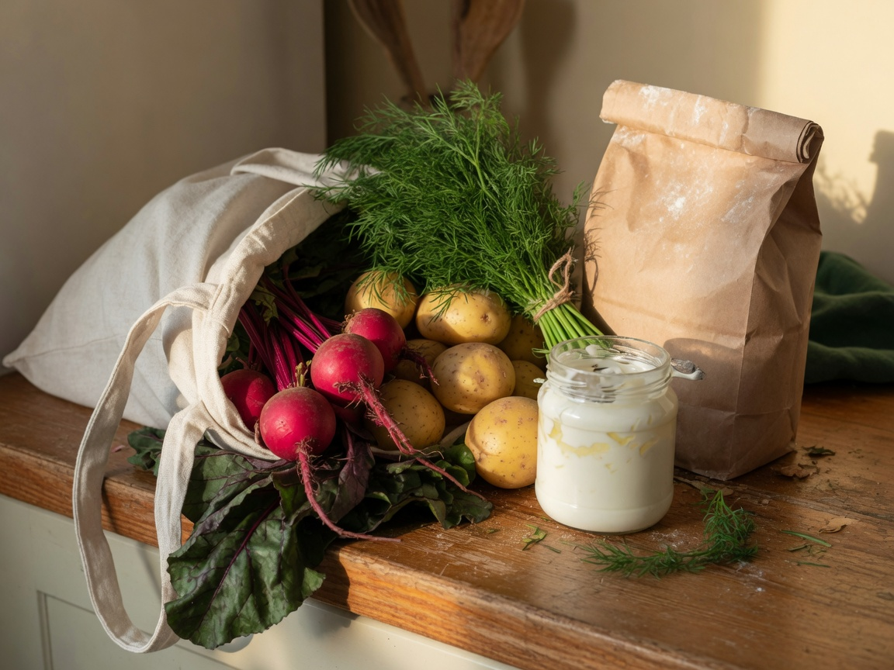

Текст
Напиши як є
борщ + хліб
Звичайна фраза. Бот розбере продукти й порції і покаже приблизну КБЖВ.

Closed beta
PlanEat у Telegram — для тих, хто вже готує. Один чат замість щоденника, планувальника і списку в нотатках.
Оцінка КБЖВ приблизна. Нічого не записується, поки ти не підтвердиш.
обід
🍽 Чернетка страви (ще не записано)
борщ — 400 г · 320 ккал
хліб житній — 40 г · 100 ккал
Кухня має цикл
Записав → запланував → купив → з’їв. Кожен крок живе в тому самому чаті, і нічого не стає фактом без твого підтвердження.
Текст, фото тарілки або голосове. Бот збирає чернетку КБЖВ — підтверджуєш, правиш або скасовуєш.
Тиждень з того, що ти реально готуєш. План зі збережених рецептів, не з чужого меню і не від AI-дієтолога.
З підтвердженого плану — список у магазин. Відмічаєш, правиш, копіюєш як текст.
Страва з плану повертається в щоденник як нова чернетка. Знову ти кажеш «так».
Без форм
Будь-що з цього йде в ту саму чернетку. Далі — один тап.
Текст
борщ + хліб
Звичайна фраза. Бот розбере продукти й порції і покаже приблизну КБЖВ.

Фото
Бот впізнає страву на око. Порції — орієнтир, тож чернетку варто глянути.
Голос
Розпізнає сказане і веде тим самим шляхом, що й набраний текст.
Telegram
Ті самі картки, що в боті. Жодного нового додатка — лог, день, план і покупки живуть тут.
борщ + хліб
🍽 Чернетка страви (ще не записано)
борщ — 400 г · 320 ккал
хліб житній — 40 г · 100 ккал
📅 Сьогодні (1 вер)
Обід · Борщ + хліб · 420 ккал
🗓 План харчування · 7 днів від 1 вер
День 1
• Сніданок: Сирники
• Обід: Борщ
• Вечеря: Гречка з грибами
План складено зі збережених рецептів без AI-планування.
🛒 Список покупок
Closed beta
Лише те, що вже працює в боті. Без дорожньої карти замість продукту.
Краще сказати одразу.

Ні. Бот не лікар і не AI-дієтолог. Оцінка КБЖВ приблизна — ти підтверджуєш запис.
Closed beta. Немає публічного прайса. Доступ — через бота в Telegram.
Ні. Працює в Telegram: @plan_eat_ai_bot.
Кілька логів їжі, один тижневий план зі своїми рецептами і короткий фідбек: що зламалось або чого не вистачає.
Closed beta
Якщо підходить цикл «лог + свої рецепти + покупки» — заходь у бота. Новий додаток ставити не треба.
Відкрити бота · @plan_eat_ai_bot